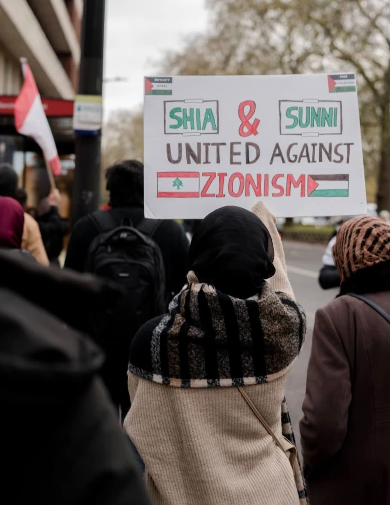

A student movement of the Ummah: standing with the oppressed, against every oppressor, in the way of Imam Hussain.
Who we are
ABSoc for Justice (AFJ) is a movement of Shia Muslim students and activists organising on campuses and in communities across Britain, in the heart of the imperial core, and fighting for justice across the world.
We reject the idea that Islam is a private ritual, to be practised quietly and kept out of public life. Islam is a complete way of life and a school of liberation. It commands every believer to stand with the oppressed (al-mustad’afin) and against the arrogant powers who crush them (al-mustakbirin).
“Be an enemy to the oppressor and a helper to the oppressed.”Imam Ali, to his sons — our creed
We act as one Ummah. We stand shoulder to shoulder with our Sunni brothers and sisters, with the peoples of the Global South, and with every person of conscience who refuses to stay silent in the face of injustice.
We are not bound to one party, movement or marja’. Our members follow different maraji’, and we take guidance from the scholars of Najaf and Qom alike. When the genocide began, Sayyid Ali al-Sistani called on “the entire world” to “stand up against this terrible brutality”, declaring that removing the occupation is “the only way to bring security and peace to this region”. Sayyid Muqtada al-Sadr filled the streets of Baghdad with a million-strong march for Palestine. From Najaf to Qom, our scholars have spoken, and we stand with them.

Why we were formed
AFJ was born out of the genocide in Gaza. From October 2023, we watched Palestinian families pulled from the rubble, Palestinian limbs torn to pieces, Palestinians burnt alive in their tents, and hospitals reduced to ash.
It was livestreamed on our screens, day after day, while Britain and its allies armed the perpetrators, and criminalised, arrested and silenced anyone who dared to resist. Silence was never an option. Neutrality in the face of genocide is complicity.
We started with Palestine, but our struggle does not end there. Zionism is a racist, settler-colonial project, the front line of Western empire in West Asia. It has bombed Lebanon, Yemen, Syria and Iran, and it survives only because the imperial powers fund, arm and shield it.
Zionism is not only a state in occupied Palestine. It is a movement with deep roots here in Britain, the imperial core that created it: from the Balfour Declaration to the arms, money and diplomatic cover that sustain it today. Its lobby groups and think tanks, its allies in Parliament and the press, and the university managers who discipline students for speaking out are all part of the same machine. Opposing Zionism means confronting that infrastructure where it was built.
And beyond Zionism, the oppression of Muslims stretches from Bahrain to Kashmir, from the Hazara of Afghanistan to the Shia of Nigeria, and from Sudan to the demolished shrines of al-Baqi. Wherever there is injustice, we have a duty to confront it.
The stand of Imam Hussain
In 61 AH, Imam Hussain stood on the plains of Karbala with a small band of companions against the army of Yazid. He refused to pledge allegiance to tyranny, declaring:
“Far from us is humiliation.”
He gave his life, his family and his companions so that truth would not be buried beneath the power of a corrupt empire.
Karbala is not a story to be remembered once a year and then forgotten, and our mourning is never passive. Every majlis, every procession and every tear shed for Hussain renews his refusal to bow to tyranny, and binds us to his cause. Imam Hussain’s call on the day of Ashura still demands an answer: “Is there anyone who will help us?”
We answer: Labbayka ya Hussain.
What we do
Our purpose
Our activism is God-centric and revolutionary. We act for the sake of Allah, guided by our scholars. Anti-Zionism is a protected belief under British law, and we will not be intimidated into silence.
The Prophet taught that the believers are like one body: when one part aches, the whole body feels the pain. Gaza aches. Lebanon aches. Yemen aches.
Join usOur core values